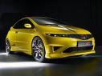

El Civic tiene un equipamiento de serie completo, todos tiene control de estabilidad. El equipamento opcional que se monta en fabrica es muy reducido: sólo hay opción de navegador, asientos con calefacción y tapiceria de piel para la version "Executive", no para las otras dos, sport y comfort. La pintura metalizada es una opción para todas las versiones. Hay otros elementos de equipamiento que se pueden montar en el concesionario, como distintos equipos de música, de ruedas y elementos diferenciadores de la carroceria.
El Civic se caracteriza porque es mas bien duro (y algo seco) de suspensión. Al menos con los neumáticos 225/45 R17 es un coche estable y con buen tacto. El motor Diesel es mas satisfactorio por presentaciones y respuesta que el 1.8 de 140CV y puede ser más silencioso a alta velocidad. En el Civic, las prestaciones y el consumo según datos de la marca son muy buenos: no hay ninguno que gaste menos y es de los mejores prestaciones.


Pagina oficial de Honda: www.nuevohondacivic.com